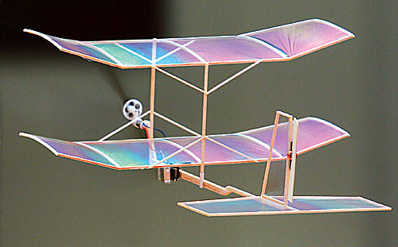

|
This model was inspired by the Plantraco Butterfly Room Flyer. At 3.8 grams, the Butterfly was the first practical radio control living room flyer available in a ready-to-fly form. I acquired one as a review subject and found it to be everything advertised. The one hitch was that the tissue covering did not take well to excessive moisture. It didn't take too long for me to be tempted by a calm summer evening, and unfortunately I didn't consider the dew forming on the grass. After a few landings the tissue shrank, warping the wing and stab. The Butterfly continued to fly well, but it now definitely preferred turning left. A few more sessions, some with the help of my two-year-old son, mandated enough repairs that it was soon time to think about my options. The Butterfly was a great RTF package, but it was also a tad fast for my exceptionally small living room. I decided to decrease the wing loading, while conforming to the physical restrictions of the original storage and travel case. The obvious solution was to add another wing, doubling the wing area, and dropping the wing loading. I carefully stripped the equipment from the Butterfly, and set it aside while I built a new airframe using contest balsa and light plastic film. I was able to come in slightly under the original weight. This has proven to be a very slow flyer, and maneuverable enough to comfortably fly figure-8s in the living room, where simple orbits previously were a challenge. The slower flight speed makes the Phoenix easier to trim and fly than the Butterfly. This is a wonderful way to revive a worn-out Plantraco Butterfly.
|
Copyright 2006, Thayer Syme. All rights reserved